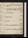

- About
- Diary
- People
- Events
- Reading
- Writing
- Meals
- Meetings
- Search

1833, Jan. 1. Tu.Necromancers, p. 5. Herodotus, c. 88. Aldis calls: dine at mrs Wood’s, w. Leis. Stanhopes, 3 Halls, 3 Holms; adv. Alkali, M W S, &c. 47 ½ / 50
2. W.Necromancers, çala. Herodotus, c. 93. Il Riposo, in New Monthly Magazine. 49 ½ / 53 ½
3. Th.Necromancers, 1 page. Herodotus, pc. 99. F R calls: call on R Tn: M W S at tea. 51 / 55
4. F.Necromancers, 2 pages. Herodotus, c. 103. Dine at C Jones’s, w. Cantwels, T P Cookes, Coopers, Moseley & Holm (Kenney expected): N G at tea n. 49 ½ / 50
5. Sa.Necromancers, 1 page. Herodotus, c. 107. Call on Hudson. 46 ½ / 50
Jan. 6. Su.Necromancers, çala. Herodotus, c. 110. Call on M W S. 46 / 49
7. M.Necromancers, 1 page. Herodotus, c. 114. 45 ½ / 48
8. Tu.Necromancers, çala. Herodotus, c. 118: Irish Character, p. 40. 46 ½ / 49
9. W.Herodotus, c. 124: Irish Character, p. 224. Dine at M W S’s, w. Percy, mrs Hogg & M J: S Reeve calls n. 46 ½ / 46
10. Th.Necromancers, 1 page. Herodotus, c. 126. Theatre, Nell Gwyn; M J & mrs Meadowse: F R, soir n. 43 ½ / 47 ½
11. F.Herodotus, c. 130: Irish Characters, Vol. II, p. 128. White calls: dine at Aldis’s, w. mrs Edwin. 43 ½ / 46 ½
12. Sa.Herodotus, c. 136; Irish Character, p. 186. M W S calls: call on Colburn; & S Gent, w. M J. 45 / 49
Jan. 13. Su.Cheste. Herodotus, c. 140: New Monthly Mage: Irish Character, p. 220, fin. 47 / 52
14. M.Herodotus, Lib. VII, c. 5: Semiramis, acte 1 & 2. Call on M Hilln: Percy dines. 50 / 53
15. Tu.Constipe. Notes for Shipwreck. Herodotus, c. 7: Semiramis, fin: Prude, acte 1 & 2. Museum, Pausaniase. 50 / 52
16. W.Constipe. Herodotus, c. 9: Prude, fin. Museum; Baylee: F R calls: S Gent sups. 49 ½ / 51 ½
17. Th.Necromancers, 1 page. Herodotus, c. 10. Museum; Baylee. M W S at tea. 49 ½ / 53 ½
18. F.Necromancers, 1 1/2 pages. Herodotus, c. 15: L’Indiscret: L’Enfant Prodigue, acte 1, 2. Museum (dark)e. 50 / 51
19. Sa.Necromancers, 1/2 page. Herodotus. c. 17: Enfant Prodigue, fin: Nanine. Jerrold calls: Westminster Hall, seek M Hill. 48 ½ / 50 ½
Jan. 20. Su.Necromancers, p. 10. Herodotus, c. 22: Femme qui a Raison. Call on Booth: M W S at tea. 48 ½ / 50
21. M.Necromancers, 1 page. Herodotus, c. 29. Call on M Hill, W[r?] Hall: Martin’s, w. Caunters, Smarts, mrs A Cunningham, 2 Landseer, Macroon, Balls, Wheatsens, Marchese. 45 ½ / 49
22. Tu.Necromancers, 2 1/2 pages. Herodotus, c. 35. Jerrold dines; adv. Meadows. 44 / 46 ½
23. W.Necromancers, 1// pages. Herodotus, c. 39: L’Ecossaise. (Sicke.) 43 / 46 ½
24. Th.Necromancers, 1 1/2 pages. Herodotus, c. 47: Droit de Seigneur. 43 ½ / 47 ½
25. F.Necromancers, 1 1/2 pages. Herodotus, c. 49: Pucelle, C. I, II: Call on Caunter: M W S at tea. 44 / 47 ½
26. Sa.Necromancers, 1 1/2. Herodotus, c. 53. F R & Manning call: dine at Aldis’s, w. Barneses, Martins, Bryans, Guntons, Coopers, Gen. Thornton, Gen. Callender, Longdale, C Jones, mrs Hallet. 44 ½ / 47 ½
Jan. 27. Su.Necromancers, 1 1/2 pages. Herodotus, c. 58: Pucelle, C. III-VII. Call on L K (adv. LB) & Olliern. 45 ½ / 50
28. M.Necromancers, 2 pages. Herodotus, c. 70. Pucelle, C. VII-XI. Seek Ollier. 47 ½ / 52
29. Th.Necromancers, 1 1/2 pages. Herodotus, c. 86: Pucelle, C. XI, XII. Seek Ollier: call on miss Northcote. Parliament meetse.50 / 52 ½
30. W.Necromancers, p. 11. Herodotus, c. 96: Pucelle, C. XIII. Call on Ollier: M W S at tea: mrs Reeve calls. Bruisee: Toothe.49 ½ / 50 ½
31. Th.Necromancers, p. 12. Herodotus, c. 103. Museum; Bp Watsone. 46 ½ / 49
Feb. 1. F.Necromancers, 1 page. Herodotus, c. 108: Pucelle, C. XIV. Call on Ollier: theatre, Nervous Mane. 47 ½ / 50
2. Sa.Necromancers, 1 1/2 pages. Herodotus, c. 118. 48 ½ / 55
Feb. 3. Su.Coughe. Fairies. Herodotus, c. 123. Call on Picken; adv. Maclure. 52 / 56 ½
4. M. Fairies. Herodotus, c. 128. Museum; Gabalise: sup at Reynolds’s, w. F. O’Keeffe dies . 53 ½ / 59 ½
5. Tu.Necromancers, 1 page. Herodotus, c. 133. M W S dines; adv. N G. 56 ½ / 61 ½
6. W.Constipe. Herodotus, c. 137. Museum; Gabalise: theatre, Smuggler Boye. 58 / 61 ½
7. Th.Necromancers, 1 1/2 pages. Herodotus, c. 140. M W S at tea. 56 ½ / 62 ½
8. F.Herodotus, c. 144: Undine: Mari Sylphe. Museum; Gabalise. Fitzwilliam dies . 57 ½ / 62 ½
9. Sa. Necromancers, 3 pages. Herodotus, c. 149. M W S at tea: meet G Whites. 58 / 61
Feb. 10. Su.Necromancers, çala. Herodotus, c. 154: Rayner: Palæologus, acts 1, 2. 55 / 62
11. M.Necromancers, c. 157. 2 1/2 pages. Herodotus, c. 157: Palæologus, fin. Call on F Rn: S Gent sups. p. 13, 14, 15/2. Scalde. 57 / 61 ½
12. Tu.Herodotus, c. 160: Gibbon, çala. Emma P dines.Deloraine published.Irish Church Reform proposede.56 / 62
13. W.Necromancers, p. 17/2. Herodotus, c. 164. H Prentis calls: M W S at tea. 57 ½ / 61 ½
14. Th.Write to Brougham & M Hill. Herodotus, c. 168: Ghost Hunter, p. 105. Call on Ollier. 55 ½ / 60
15. F.Herodotus, c. 173: Ghost Hunter, p. 168. Call on L Ritchie: M W S at tea.Irish Coercion Bill, 1st reading, Lordse.53 ½ / 59
16. Sa.Necromancers, p. 18. Herodotus, c. 178: Ghost Hunter, p. 274. Jerrold calls. 51 ½ / 54 ½

Feb. 17. Su.Necromancers, p. 19/2. Herodotus, c. 184: Ghost Seer, Hunter, p. 330, fin. 51 / 55
18. M.Necromancers, p. 21/2. Herodotus, c. 191. F Wright calls: M W S at tea. 52 ½ / 58
19. Tu.Necromancers, p. 22. Herodotus, c. 196: Scott, Life of Dryden, p. 56. Museum; Fraguiere. F Wt calls. 52 / 57 ½
20. W.Ash Wednesday; Museume. Zoroaster. Herodotus, c. 102: Dryden, p. 186. Joseph calls. 53 ½ / 57 ½
21. Th.Necromancers, 1/2 page. Herodotus, c. 208. Museum; Cudworthe. Theatre, Iron Chest (C Kean); adv. Skeffingtone: H Holm calls n. 52 ½ / 55 ½
22. F.Necromancers, p. 24. Herodotus, c. 214: Dryden, p. 267. Museum; Aristophanese. M W S at tea: call on mrs Pickergil. (Orpheus.) 52 / 53 ½
23. Sa.Necromancers, p. 25. Herodotus, c. 220{.} Museum; Iamblichuse. Copies delivered. 50 / 54 ½
Feb. 24. Su.Necromancers, p. 26/2. Herodotus, c. 226. 49 / 53
25. M.Necromancers, çala. Herodotus, c. 233: Toland, çala. Museume. Mrs Gaskel & miss Bakewel call: Martin’s, w. 2 Heaphys, 2 Caunters & Landseer. 51 / 56 ½
26. Tu.Necromancers, p. 26. Herodotus, c. 239{:} Laertius, çala. Museum; Observere. 53 / 55 ½
27. W.Necromancers, çala. Herodotus, Lib. VIII, c. 5. Museum; Iamblichuse. Sup at Reynolds’s, w. F & R. 53 ½ / 55 ½
28 Th.Necromancers, Pythagoras. Herodotus, c. 9. M W S at tea: Mrs Gaskel do. 51 ½ / 54 ½
Mar. 1. F.Necromancers, p. 28. Herodotus, c. 13. Museum; Iamblichuse. 51 / 54 ½
2. Sa.Necromancers, p. 30. Herodotus, c. 20. Museum; Iamblichuse. 51 / 57 ½

Mar. 3. Su.Necromancers, p. 31{.} Herodotus, c. 26. Call on Picken, & G Whiten: Pickergil’s, w. Ayrton, Emerson, Trueba, Knowles, Poole, Brockedon, Joseph’s physician, Beloe, Wheatsen, Morris, Dilkeses. 54 ½ / 61
4. M.Necromancers, p. 32/2. Herodotus, c. 31. Uwins calls: theatre, Reputatione: adv. Spencer, Skeffington & Barham. 56 ½ / 59 ½
5. Tu.Fatiguee. Herodotus, c. 37. Museum; Philostratuse. M W S & N G at tea. 54 / 61
6. W.Necromancers, 1/2 page. Herodotus, c. 43. Museum; Iamblichuse. Dudley dies .55 / 57
7. Th.Necromancers, p. 32. Herodotus, c. 50: Invisible Gentleman, p. 261. Museum; Iamblichuse: M W S at tea. M J to Dovere. 52 ½ / 58
8. F.Necromancers, p. 34. Herodotus, c. 56: Invisible, p. 327. Call on Joseph: M W S dines. 50 / 52
9. Sa.Colde. Write to M J. Herodotus, c. 60: Invisible, Vol. II, p. 105. R Mackintosh, F R & mrs Gaskel call: theatre, Kentuckian; adv. Jerrold, Jerdan & Linc. Se. Nix, parce.47 / 50

Mar. 10. Su.Necromancers, p. 35. Herodotus, c. 64: Dryden, p. 534, fin: Invisible, p. 327. Call on Booth. 46 ½ / 49 ½
11. M.Herodotus, c. 66: Invisible, Vol. III, p. 151. Museum; Iamblichuse: M W S dines. Snow.47 / 50 ½
12. Tu.Necromancers, p. 37/2. Herodotus, c. 70: Invisible, p. 217. Mrs Gaskel (Joseph’s) & Kenney call: dine at M W S’s; adv. Joshua, Julia & Robinson, maj. Bleauclerk & Rainy. 46 ½ / 50 ½
13. W.Fog. Necromancers, çala. Herodotus, c. 74: Invisible, p. 324, fin: J Taylor, p. 95. Museume. 45 / 48 ½
14. Th.Necromancers, çala. Herodotus, c. 78: J Taylor, p. 218. Museum; Stanleye. M W S at tea. 44 / 48 ½
15. F.Necromancers, çala. Herodotus, c. 84: J Taylor, p. 376. Museum; Baillye. Mrs Wood’s, Ramoun Roy, T Campbel, rev. Hill, Stanhopes, Alkali, Holm, Sass, C Jones, mrs Booth, M W. 45 / 51
16. Sa.Necromancers, p. 37. Herodotus, c. 87: J Taylor, p. 432. Museum; Daciere: Carne at tea: M J from Dovere. 49 / 56
Mar. 17. Su.Necromancers, p. 39/2. Herodotus, c. 91. Pickersgil’s, w. Morton, Poole, Prior, Beloe, Wheatsen & miss Roberts. 50 ½ / 53 ½
18. M.Necromancers, çala. Herodotus, c. 96: J Taylor, Vol. II, p. 54. Vote for Murraye: Museum; Laertiuse: M W S at tea.Deliquium parvume.50 ½ / 54
19. Tu.Herodotus, c. 100: J Taylor, p. 126. Museum; Laertiuse: theatre, Maid of Cashmeree. 50 / 53 ½
20. W.Constipe. Herodotus, c. 104: J Taylor, p. 263. Museum; Laertiuse. M W S at tea. 48 ½ / 52 ½
21. Th.Necromancers, çala. Herodotus, c. 108. J Taylor, p. 371. Mrs Gent sups. Museum; Luciane. 48 ½ / 52 ½
22. F.Necromancers, çala. Herodotus, c. 111: J Taylor, p. 412. Museum; Naudée. Snow. 48 / 51
23. Sa.Necromancers, p. 41/2. Herodotus, c. 117: Mansfield Park, p. 92. Gaskels & M W S at tea. 47 / 50
Mar. 24. Su.Necromancers, p. 43/2. Herodotus, c. 121: Mansfield Park, p. 250. 46 ½ / 50
25. M.Necromancers, p. 45. Herodotus, c. 127. Mansfield Park, p. 310. Theatre, 1/2 Othello; adv. Skeffingtone. Museum; Luciane. 48 ½ / 51 ½
26. Tu.Necromancers, p. 48/2. Herodotus, c. 129. Museum; Luciane. Manning dines. Mansfield Park, p. 360. Snow.49 / 51
27. W.Necromancers, p. 48. Herodotus, c. 133. Museume: call on miss Northcote; adv. Wivel. 49 / 52
28. Th.Herodotus, c. 136: Mansfield Park, Vol. II, p. 45. Hudson at tea. Museum; Luciane. 49 / 57 ½
29. F.Necromancers, çala. Herodotus, c. 139: Mansfield, p. 108. Museum; R Narese. Prior calls: Percy dines; adv. M W S. 52 ½ / 56 ½
30. Sa.Necromancers, çala. Herodotus, c. 142: Mansfield, p. 162. Museum; Dunlope. Theatre, Coiners, & Nabob for an Hour; adv. Skeffingtone54 / 5927 + 48 = 75 pages.
Mar. 31. Su.Necromancers, p. 49/2. Herodotus, c. 144: Mansfield, p. 294. G Whites call: Pickersgil’s, Meminski, Czartorinski, mrs Richardson, miss Roberts, Murray, Ayrton, E Poole, T Hill, Wheatsen, Parke, traveller53 ½ / 59 ½
Apr. 1. M.Necromancers, 1 1/2 pages. Herodotus, Lib. IX, c. 6: Mansfield, Vol. III, p. 45. Museume: M W S at tea. 55 / 60
2. Tu.Tenebræe. Herodotus, c. 10: Mansfield, p. 354, fin. Irish Coercion Act passede. 57 ½ / 60 ½
3. W.Letter to Grey. Herodotus, c. 15: Gilblas, p. 58. M W S at tea. 58 / 62
4. Th.Necromancers, p. 51/2. Herodotus, c. 20: Gilblas, p. 97. Write to Grey. Museum; Baniere: sup at Reynolds’s, w. F. 58 / 62 ½
5. F.Necromancers, p. 53/2. Herodotus, c. 25: Gilblas, p. 119. Call on mrs Wintern & Picken: N G at tea. 59 / 63 ½
6. Sa.Necromancers, p. 54. Herodotus, c. 27: Nature & Art, p. 50. Museum; Platoe. M W S at tea; adv. mrs Hogg. 58 / 62 ½
Apr. 7. Su.Necromancers, p. 56. Herodotus, c. 32: Nature & Art, p. 134 fin. Gilblas, p. 150. 56 ½ / 62 ½
8. M.Necromancers, p. 57. Herodotus, c. 38: Gilblas, p. 197. F R calls; walk. 57 ½ / 64
9. Tu.Necromancers, çala. Herodotus, c. 42: Gilblas, p. 234: Simple Story, p. 50. 58 / 63
10. W.Necromancers, p. 59/2. Herodotus, c. 47: Simple Story, p. 84. Theatre, Othello, Aldridge; adv. Jerdan & Knowles senre. 58 ½ / 62 ½
11. Th.Necromancers, çala. Herodotus, c. 48: Simple Story, p. 129. M W S at tea, & Percy. 57 / 61 ½
12. F.Herodotus, c. 52: Simple Story, p. 178. Call on E Grey, Bedford, mrs Cox, Ross, & Gaskeln. 55 ½ / 60 ½
13. Sa.Herodotus, c. 56: Simple Story, p. 210. Call on Boaden: meet Mathews: M W S at tea. 58 / 62
Apr. 14. Su.Necromancers, p. 61/2. Herodotus, c. 57: Simple Story, p. 296, fin. Pickersgil’s, w. D Stewt, Baker (Brighton), Coll Grattan, Fabecks, Ayrton, Poole, Wheatsen, Sigmond, miss Roberts, mrs Richardson, Brockedon. 56 / 61
15. M.Necromancers, çala. Herodotus, c. 58: Gilblas, p. 266. Snow.55 / 59 ½
16. Tu.Necromancers, p. 62/2. Write to C Grey. Herodotus, c. 63: Gilblas, p. 315; Tom. II, p. 37. Call on mrs Pickersgil, for Poole. 54 / 59
17. W.Necromancers, çala. Herodotus, c. 69: Gilblas, p. 112. Call on Dr Ritchie. Note fr. C Grey. 53 ½ / 58 ½
18. Th.Necromancers, p. 63. Herodotus, c. 72: Gilblas, p. 180. 54 / 58 ½
19. F.Necromancers, p. 65. Herodotus, c. 77: Gilblas, p. 196. Colley Grattan calls: call on M W S; adv. P, & mrs Hogg: Kenney sups. 54 / 60
20. Sa.Necromancers, p. 66. Herodotus, c. 79: Gilblas, p. 220. Call on mrs Rossna: M W S & Percy tea & supper. 56 ½ / 61 ½
Apr. 21. Su.Necromancers, p. 67. Herodotus, c. 82: Gilblas, p. 275. Hudson at tea. Call on Booth; adv. Rogers, aveugle. 58 / 62
22. M.Herodotus, c. 85: Gilblas, Tom. III, p. 48. Call on Roberts, Bedford, mrs Cox Ross & Gaskel, w. M J: on M W S; adv. mrs Hogg: Martins; Caunter, Heaphy, Thomas, Wheatsen, Brooke, C Landseer, miss Osbne, miss Roberts, miss James. 58 / 64
23. Tu.Necromancers, p. 68/2. Herodotus, c. 88: Thoughts on Man, p. 72. Call on Joseph. 60 / 64 ½
24. W.Herodotus, c. 93: Thoughts, p. 126: Gilblas, p. 72. Call on H Holmn: Poole & T Htna call: theatre, Wife; adv. Spencer, Lincoln S, R R, Hill, Forster & Rochee: M W S & P sup. 61 / 64
25. Th.Necromancers, p. 68. Herodotus, c. 97: Gilblas, p. 116. Call on M W S: theatre, Ellen Warehame. 60 / 62
26. F.Necromancers, p. 69. Herodotus, c. 101: Gilblas, p. 190. Call on mrs Ross & BedfordRoberts; adv. Huntley, Ramsey, Forster, & creditors, w. M J. Malt Tax reduced, 162 to 152e.57 / 64
27. Sa.Necromancers, p. 70. Herodotus, c. 105: Thoughts, p. 163: Gilblas, p. 230. Grayson calls: call on Hudson & Vernon (Treasury): sup at Reynolds’s, w. F & R. 61 ½ / 65
Apr. 28. M. Su.Necromancers, p. 71/2. Herodotus, c. 106: Gilblas, p. 304. F R calls: Kennies sup. 62 / 65 ½
29. Tu. M.Necromancers, p. 73. Herodotus, c. 110: Gilblas, Tom. IV, p. 52. Deorsume.59 / 64
30. Tu.Necromancers, 13 lines. Herodotus, c. 114. Call on Roberts, Peak & F Ross. Althorp’s motion, 355 to 157e.56 ½ / 61 ½
May 1. W.Herodotus, c. 118: Gilblas, p. 176. Call on Peak (adv. Dorset & Phillips), Gaskel (adv. mrs Grove), & T Rodd (adv. R[odd?]){:} H Reeve calls n. 57 ½ / 61 ½Rich)
2. Th.Herodotus, c. 122, fin: Gilblas, p. 254. Mrs Hogg au soir. 59 / 63
3. F.Gilblas, p. 280. Call at on Peak & Roberts: meet Bryant: Howis, coal merchant. 62 / 71
4. Sa.Grayson calls. Remove to New Palace Yarde. 64 ½ / 73
May 5. Su.St James’s Park, & Westminster Bridge. 65 ½ / 68
6. M.Churchil, çala. Trial of Pixe. Meet M Burney: N G at tea: Phillips (May & P) inebrie.e. 64 / 68
7. Tu.Churchil, çala. 61 / 68 ½
8. W.Churchil, çala. 61 /67
10. F.Bookse. Gaskel calls: M W S dines & sups. 64 / 72
11. Sa.Churchil, çala. Meet Brougham & Althorp. 63 / 68

May 12. Su.Call on Everina (mrs Hunt): S Gent, & Hudsons twice na call: Pickergil’s, Rogers, Kenney, Dr Elmes, L Ritchie, Knowles, Prior, Wheatsen, Morrises, miss Roberts, Granville. 62 / 71
13. M.Joseph au soir. Lear, act 1.Calthorpe Street63 ½ / 70 ½
14. Tu.Call on Bedford; adv. Roberts, senr & junr. 62 ½ / 73
15. W.Furnituree. Lear, Act 2. Kean dies .69 / 76
16. Th.Bookse. T Ht calls. 70 / 73
17. F.Call on Ellis, Roberts, & Waller & Phipps, (Woods & Forests). 68 / 74
18. Sa.Lear, act 3. 65 / 67

May 19. Su.Lear, act 4. Call on Rickman: Hudson at tea; adv. Gaskels. 63 / 67
20. M.Gilblas, p. 312. Dyern & Hudson call. 62 / 65 ½
21. Tu.Tontine Room arrangede. Theatre, Rip V. Winkle, act 2e. 61 ½ / 66 ½
22. W.Lear, act 5: Gilblas, fin. Meet F R: call on Hudson: Blanchards au soir: Sass’s, H Robinson, Morton, Heaphy, Foggo, Wheatsen, Thornton Hunt, Drew, Judkin, BrockedonExhibitne. 62 ½ / 67 ½
23. Th.Hamlet, act 1. Phipps & Webley call: walk to D L Theatre. 62 ½ / 66 ½
24. F.Sit in Tontine Pell Officee. White (Esleworth) dines. 63 / 67 ½
25. Sa.Necromancers, çala. 63 / 72

May 26. Su.Necromancers, p. 74. Call on Booth; adv. Rogers: Pickersgil’s; Ayrton, Poole, 2 Ritchie, Knowles, Sigmond, Prior, Morrises, Wheatsen, mrs Richardson, mrs Wood, miss Roberts62 / 63
27. M.Necromancers, çala. Call on miss Northcote. 58 ½ / 63
28. Tu.Necromancers, p. 75/2. Call on Gaskeln. 57 ½ / 63
29. W.Necromancers, çala. Dine at Rickman’s, w. Sussex farmer, Nicholson, Perkins?, & son of W. Smith. 58 ½ / 63
30. Th.Necromancers, çala (Peregrine Proteus). 60 / 63
31. F.Necromancers, çala (Peregrine Proteus). Call on Bedford; adv. Bulley. 59 / 63
June 1. Sa.Necromancers, p. 77. B Montagu calls. 61 / 66
June 2. Su.Necromancers, p. 78. Call on Isa. Booth. 62 / 66
3. M.Necromancers, p. 79/2. Elia, Vol. II, p. 83. Call on mrs Rickman, w. M J: Grayson & mrs A White call. Vote on Portugal, Lords, 68 to 80e. 61 / 64
4. Tu.Necromancers, çala. Elia, p. 226. Museum; Philostratus, &ce. Fievre, 2 dayse. 60 / 64
5. W.Necromancers, çala. Elia, p. 283. F R calls: meet Bentley: N G at tea: theatre, Fontainbleaue. 59 ½ / 64 ½
6. Th.Necromancers, ça p. 79. Theatre, 2/3 Perfection, & Student of Jenae. Vote on Portugal, Cs, 361 to 98e.60 ½ / 66
7. F.Necromancers, çala (Apuleius). 62 ½ / 67
8. Sa.Necromancers, p. 80. Museum; Luciane. Theatre, Sonnambulae. 64 /67
June 9. Su.Necromancers, p. 83/2. Call on Booth. 62 / 72
10. M.Necromancers, p. 83. Hudson & Booth call. 62 / 69 ½
11. Tu.Necromancers, p. 84/2. Museum; Zosimuse. Call on La. Aldis. High wind.67 / 65
12. W.Meet Ellis: call on Roberts & Bedford: Meadows sups. Letter, Hon. Jas Stewarte. 60 / 66
13. Th.Museum; Lardnere. Call on Bedford: sir Cha. & B Aldis call. 61 ½ / 65
14. F.Letter to Grey. Gaskels at tea. 61 / 67
June 16. Su.Necromancers, p. 84. Call on mrs Hogg, Maida Place. 63 / 69
17. M.Necromancers, p. 85/2. Call on mrs Norton, w. F R, & on mrs White, w. M J: mrs Hogg au soir. 63 / 66
18. Tu.Necromancers, p. 86/2. Call on Mason: mrs & miss Rickman call. 61 ½ / 66
19. W.Call on Dr Scott & Booth: theatre, Field of 40 Footstepse. Necromancers, 2 lines. 63 / 65 ½
20. Th.Call on ArquisHarkness: seek Haughton & Mitchel: Rowbotham at tea: meet E Poole. Necromancers, 4 lines. 63 / 65 ½
21. F.Call on Haughton (Asiatic Society); adv. John Shakespear, &c: mrs Hogg dines. 61 ½ / 65 ½
22. Sa.Arabian Nights, p. 87. Call, w. Rowbothom, on Phillips(Wood & Forests), Welsh & Mitchel, A S: seek Higgins. 62 / 69
June 23. Su.Letter to Grey. Arabian Nights, p. 200. 59 / 67
24. M.Letter to Grey. Arabian Nights, p. 250. Call on Hudson: Hudson sups. 59 / 67
25. Tu.Arabian Nights, p. 280; Vol. II, p. 64.Gaskels & miss Bakewel at tea: Ant. White calls n. 59 / 66
26. W.Arabian Nights, p. 124. Dr Aldis & Blanchards call. 61 ½ / 69
27. Th.Arabian Nights, p. 172: Salveste, p. 17. 61 / 65
28. F.Bilee. Arabian Nights, p. 261: Salveste, çala. 62 / 69 ½
29. Sa.Arabian Nights, Vol. III, p. 137. 65 / 69 ½
June 30. Su.Arabian Nights, p. 248. Dine at Gaskel’s, w. Hunters, col. Williams, miss Pilkington64 / 66
July 1. M.Necromancers, p. 87/2. 59 / 68
2. Tu.Arabian Nights, çala. 58 ½ / 66
3. W.Arabian Nights, çala. Theatre, Fortune’s Frolic, & My Wife’s Mothere. 58 ½ / 66
4. Th.Seek Col. Thomson. 58 ½ / 66
5. F.Arabian Nights, çala. Call on col. Thomsonn; adv. Robinson: N G at tea; adv. col. Thomson62 / 68
6. Sa.Constipe. Arabian Nights, çala. Call on Roberts, chezEllis: White calls. 63 / 67 ½
July 7. Su.Arabian Nights, çala. 65 / 69 ½
8. M.Arabian Nights, çala. 63 / 71
9. Tu.Dine at White’s, Isleworth, w. mrs Miller & Bevan. 61 / 68
10. W.Museum; Keightley, &ce. Mrs Hogg & E W dine. 61 / 67
11. Th.Call on Haughton, & Martinn. 64 / 67
12. F.Arabian Nights, çala. M W S dines; adv. Uwins & mrs Hamilton. 63 / 70
13. Sa.Arabian Nights, çala. Call on Ollier, & Gaskeln: seek Morier. 59 / 68 ½
July 14. Su.Necromancers, p. 87. Letters to Morier & A O’Keeffe. 63 / 69 ½
15. M.Museum; DRichardsone. M W S & E Wt dine. 64 /67
16. Tu.Exchequer Accountse. Gaskels at tea. 62 ½ / 69
17. W.Museum; Richardsone. Theatre, Housekeeper; adv. Holm & Mrs Woode. 64 / 72
18. Th.Museum; Richardsone.John Biddulph (Bristow)67 / 73
19. F.Books, removee. Wellington, Amendmt negd 157 to 98e. 64 ½ / 68 ½
20. Sa.Rowbotham & Steinman call: dine Bell, Edmonton, w. Rickmans & C Lamb. 63 ½ / 68
July 21. Su.Books, arrangee. 63 / 70
22. M.Call on Roberts, absent 10 dayse: Gaskels at tea. 63 / 70
23. Tu.Inchbald, çala. 63 / 72
24. W.Inchbald, çala. Seek Wheelwright: call on Booth, &, w. M J, on mrs Gaskel. Surrender of Lisbone.61 / 69
25. Th.Meet L Ritchie (Dalton, £150 p. a.): call on Clint & Ramoun Roy: Hudson, Fr. & Co. at tea. Abp 84 to 82e63 / 68 ½
26. F.Write to Ramoun Roy: Call on Wheelwright & T Roddn: Gaskels call (Thelwal). 61 ½ / 70
27. Sa.Fadlallah. Call on T Rodd; adv. Horace. 67 / 75 ½
July 28. Su.Necromancers, p. 88 (Dream). 69 / 72
29. M.Necromancers, p. 90/2. Museum (Du Bois)e. Wilberforce dies . 67 ½ / 70
30. Tu.Irritabe. British Institution (Reynolds, Lawrence, West)e: meet Hume (adv. Burdet). 3 Hudsons at tea. 63 / 69
31. W.Persian Tales, çala. Call on Welsh & miss. Northcote. 63 ½ / 69
Aug. 1. Th.Colde. Persian Tales, çala. Seek Douce: meet T Rodd: call on Joseph & T Uwins: theatre, Nic. Ham; adv. Skeffingtone. B Aldis at tea. 64 / 70 ½
2. F.Persian Tales. M W S & Percy dine. 63 / 70
3. Sa.Wilberforce’s Funerale. Call on Douce. 60 / 69
Aug. 4. Su.Life of Surrey, p. 74. S Gent dines: Hargrave calls n. 59 ½ / 69
5. M.Surrey, çala. N G at tea: Gaskel calls: Jerrold expected. 60 / 69
6. Tu.Necromancers, p. 91. Jerrold calls. 60 / 69 ½
7. W.Necromancers, p. 92/2. Call on Humen. 58 ½ / 67 ½
8. Th.Necromancers, p. 93. Hume calls: M W S & Percy dine. 58 ½ / 68
9. F.Necromancers, p. 94. Treasury, w. Billse. 63 / 72
10. Sa.Colde. Rammohun Roy calls na, w. Letter. 60 / 66
Aug. 11. Su.Necromancers, 9 lines. Arabian Nights, çala. Percy dines. 59 ½ / 66
12. M.Indisposede: Coriolanus, act 3. Arabian Nights, çala. Museum; W Ward; adv. Boothe. 59 ½ / 69 ½
13. Tu.Arabian Nights, çala. Dine at Hume’s, w. Fitzgerald & miss Partridge. 58 ½ / 68
14. W.Arabian Nights, çala. Call on Barry, &c: theatre, Pyramus, & Malibran; adv. Colliere. Irish Church Reform Act passed e58 ½ / 69
15. Th.Sterline, J Cæsar, acts 1, 2/2. Leic. Stanhope’s, w. La C Bury, La. Stepney, 2 Bulwers, Raman Roy, Thelwal, C Beauclerk, M W S, Hall, Alkali, Mrs Wood. 58 / 67
16. F.M W S & Percy dine; adv. mrs Rickman.Hume, Motion on Sinecures, withdrawne. 58 / 66 ½
17. Sa.Collier, J P, çala. Miss Northcote calls, w. M J. 58 / 69 ½
Aug. 18. Su.Robertson, Mary, çala. 61/ 72
19. M.Robertson, çala. 62 / 72
20. Tu.Robertson, çala. La. Stepney’s, w. La. C Bury, Leic. Stanhopes, Jerdan, miss Landon, col. Hughes. 63 ½ / 70
21. W.Robertson, çala. Dine at Ant. White’s, w. Geo. Whites & femme. Alcock dies. 65 / 68
22. Th.Necromancers, p. 96/2. Call on Caroline Hume: M W S & Percy dine. 58 / 68
23. F.Necromancers, çala. Call on Car. Norton: sup at Reynolds’s, w. F & R. 58 / 71
26.4. Sa.Necromancers, p. 98. Jerrold calls. 59 ½ / 58 ½
Aug. 25. Su.Necromancers, p. 99/2. Call on Booth: Hudsons call. Fire, 2 days. 60 / 73
26. M.Necromancers, p. 100. Call on La. Stepney, & Leic. Stanhopen. 63 / 68
27. Tu.Necromancers, p. 101. Joseph Hunter calls: Museum; Salee. 58 ½ / 71
28. W.Necromancers, p. 103. Hargrave at tea. 60 / 73
29. Th.Necromancers, p. 105/2. Hargrave calls. Parliament proroguede.62 / 69
30. F.Indisposede. Call on Hudson & Hume. 62 ½ / 70
31. Sa.Necromancers, p. 106. Rain & wind. 59 / 66
Sept. 1. Su.Necromancers, p. 107. Right thumb, nervee. 56 / 67
2. M.Necromancers, p. 108/2. Call on B Montagu: M W S dines: Leic. Stanhope’s, w. T Campbel, La. Stepney, Zemindar, C Beauclerk, Birkbecks, Thelwal, Holms, mrs Wood, M W S.col. Hughes, Rosetti, Alkali. 55 ½ / 67
3. Tu.59 / 67
4. W.Necromancers, p. 109/2. G Dyer calls: call on Clint; adv. M W S & mrs Hogg: M W S dines. 58 ½ / 67
5. Th.Necromancers, çala. N G at tea. T Campbel calls n. 56 ½ / 66
6. F.Necromancers, çala. T Campbel calls. 59 / 67 ½
7. Sa.Necromancers, çala. Museum; Naudée. F R calls n. Hannah More dies . 57 / 68 ½
Sep. 8. Su.Necromancers, çala. 59 ½ / 69 ½
9. M.Necromancers, çala. Ayrtonna & Tho. Campbel call. 62 / 71
10. Tu.Museum; Naudée. M W S dines: Leic. Stanhope’s, w. Julien, Lardner, miss Landon, Holm, miss Sheridan, & mrs Wood. 63 / 71
11. W.Necromancers, p. 110. Call on Norton. 64 / 69 ½
12. Th.Wind. Tho. Campbel at tea. 60 / 71
13. F.Necromancers, p. 111/2. Dine at Rickman’s, w. Ayrtons, Setons, sir Frederic Aton Madden, Ant. White. 58 ½ / 67
14. Sa.Necromancers, p. 112. Museum; Monumetensise. 60 / 71
Sep. 15. Su.Necromancers, 2 lines. Henry, çala. Call on Booth; adv. Charles B. 60 / 72
16. M.Necromancers, çala. Seatonna & Tho. Campbel call: M W S & Percy dine; adv. Jerrold. 62 ½ / 69
17. Tu.Half-yearly payment, Exchequer. 62 / 69
18. W.J Ross calls: call on Car. Nortonn. 59 ½ / 67
19. Th.Necromancers, p. 113. Museum; W of Malmesburye: M W S dines. 59 / 72 ½
20. F.Necromancers, p. 116. Bojard, st. 20. Call on mrs Ayrton: Jerrold sups. 60 ½ / 68
21. Sa.Necromancers, 7 lines. Deorsume. 64 / 72
Sep. 22. Su.Necromancers, p. 117/2. M W S dines. 62 / 71
23. M.Dine at Literary Union, w. T Campbel, Lardner, Elmer, Dilke, Fonblanq, J Russel; adv. Poole. Cecilia, p. 72. 62 / 70
24. Tu.Nauseae. Selene, p. 58. T Campbel dines. 64 / 70
25. W.Selene, p. 168. Call on Seatonn. 62 ½ / 72
26. Th.Selene, p. 241. Rickman & femme, & Fennimore Cooper call: dine at Poole’s, w. T Campbel, Pickersgil, Denman & Norton. 64 / 73
27. F.Necromancers, çala. T Campel & Jas White call. 58 ½ / 69
28. Sa. Coach to Harrow; dine & sleep. 61 ½ / 67[Not in London]
Sep. 29. Su.Montaigne, çala. Walk, w. M W S: coach, from Harrow, soir. Ferdinand VII dies . 64[Not in London]
30. M.Montaigne, çala. Call on T Campbeln: H Holm sups. 58 / 69
Oct. 1. Tu.Montaigne, çala. T Campbel calls. Fog. 59 / 67
2. W.Montaigne, çala: Werter, p. 106. Seek La. Cha. Bury. 58 / 70
3. Th.Constipe. Werter, p. 168; Vol. II, p. 125. 60 / 68
4. F.Necromancers, p. 117. Werter, p. 172, fin: Ossian, çala. 59 / 67
5. Sa.Necromancers, çala. Theatre, 1/2 Barber of Seville, & Deserted Daughtere. 59 ½ / 65 ½
Oct. 6. Su.Necromancers, p. 120/2. Ossian, çala. Dine at T Campbel’s, w. T Uwins, Ayrtons, Mackenzie & capt. ; invité Joseph: Aldis calls n. 59 ½ / 66 ½
7. M.Necromancers, p. 121/ 2. NG at tea: theatre, 1/2 Pizarro; adv. Skeffingtone. 59 ½ / 66 ½
8. Tu.Necromancers, p. 122. Headsman, p. 50. Mrs Hogg dines. Aperiente. 59 / 66 ½
9. W.Necromancers, p. 123. Headsman, p. 321. 59 ½ / 69
10. Th.Headsman, Vol. II, p. 159. Call on Peak & Roberts: Lewis & Wadman call: seek Flather: Leigh sups, Jas. 63 / 64
11. F.Headsman, p. 317. Call on Roberts (50), Bedford & Hudson & B Montagun. Rhubarbe.58 ½ / 71 ½
12. Sa.Necromancers, çala. Headsman, p. 264. Jerrold calls. 59 / 69
Oct. 13. Su.Necromancers, p. 125/2. Headsman, p. 331, fin: Cecilia, p. 94. B Aldis at tea. 55 ½ / 66
14. M.Necromancers, p. 126/2. Cecilia, p. 212. Arthur Smith calls. 59 ½ / 68 ½
15. Tu.Necromancers, çala. Museum; Malmesburye. Kenney sups. 58 / 69 ½
16. W.Necromancers, çala. Cecilia, p. 299. A Smith calls: call on miss Northcote56 ½ / 63 ½
17. Th.Necromancers, p. 126. Cecilia, Vol. II, p. 70. Call on B Montague: A Smith tea & sup. 54 ½ / 64
18. F.Necromancers, çala. Museum; Mornaye. T Campbel calls (write to do): sir C & La Aldis au soir: Thrupp sups. 54 / 65 ½
19. Sa.Necromancers, çala. Museum; Mornaye. Bulwer, England, p. 100. Leic. Stanhope calls. 56 ½ / 69
Oct. 20. Su.Necromancers, p. 127/2. Bulwer, p. 250. A Smith calls: call on Isa Booth; adv. Ch.55 ½ / 67 ½
21. M.Constipe. Write to Martin. Bulwer, p. 399: Cecilia, p. 232. 57 ½ / 66 ½
22. Tu.Necromancers, p. 129/2. Cecilia, p. 285; Vol. III, p. 58. 61 / 67 ½
23. W.Necromancers, p. 130/2. Cecilia, p. 122. Caunters & miss James at tea. 61 / 70 ½
24. Th.Necromancers, p. 131/2. Bulwer, Vol. II. Picken au soir: Leic Stanhope’s, w. La Stepney, miss Landon, T Uwins, Crawford, C Perry, Julien, Rosetti, miss Porter, M W S, Alkali, mrs Wood59 ½ / 72
25. F.Necromancers, p. 131. Cecilia, p. 187. M W S dines. 63 ½ / 70 ½
26. Sa.Necromancers, çala. Museum; Gervasiuse: T Campbel calls: call on Booth: theatre, Uncle Johne. 62 / 73
Oct. 27. Su.Necromancers, p. 132/2. Gertrude of Wyoming, Pts I, II. S Gent calls. 62 / 72 ½
28. M.Necromancers, p. 133. M W S calls: Martin’s; Mallord Turner, Heaphy, Brockedon, C Landseer, Atherston, Wheatstone, Brookes, Caunters. 67 / 72
29. Tu.Necromancers, çala. Cecilia, p. 321. Dine at Caunter’s, w. M J. 64 ½ / 70
30. W.Necromancers, çala. Museum; Roger Bacon; adv. Jas Lawrencee: meet Boaden: T Campbel sups. 62 / 70
31. Th.Necromancers, p. 135/2. Gertrude, Part III: Cecilia, Vol. IV, p. 82. 65 / 68
Nov. 1. F.Necromancers, p. 136. Cecilia, p. 135. Call on Douce. 64 / 67
2. Sa.Necromancers, çala. Museum; Naudé, Freinde. Theatres; D L, adv. Collier & Forster; C G, Sp. Barber, adv. Skeffington & Goulde. 58 ½ / 67 ½
Nov. 3. Su.Necromancers, p. 138. Repealers, p. 169. 58 / 63
4. M.Necromancers, p. 140. Repealers, p. 316. B M calls. 54 / 62
5. Tu.Necromancers, p. 141. Repealers, Vol. II. 55 ½ / 64 ½
6. W.Necromancers, çala. Museum; Trithemiuse. N G at tea: Leic. Stanhope’s; La Cha. Bury, La. Stepney, Lardner, Grattan, Spurge, mrs Wood57 ½ / 67
7. Th.Rain. Repealers, Vol. III, p. 195: Cecilia, p. 260. Call on Bedford; adv. Roberts. 57 ½ / 66
8. F.Necromancers, p. 142. Museum; Reese. Repealers, p. 320, fin. Sup at Reynolds’s. 54 / 63
9. Sa.Necromancers, p. 143/2. Cecilia, p. 29353 ½ / 63
Nov. 10. Su.Necromancers; Wotton. Cecilia, Vol. V, p. 139. 55 ½ / 68
11. M.Necromancers, p. 143. Cecilia, p. 262. La. Stepney, w. capt. Ross, La. C Bury, Landon, Joseph, T Uwins, T Campbel, Murray, Jerdan, miss Porter, Leic. Stanhopes, Lardner. Lockharts. 56 / 68
12. Tu.Fog. Cecilia, p. 321, fin. Wallace calls. 62 / 65 ½
13. W.Fog. Evelina, p. 128. 58 ½ / 68 ½
14. Th.Necromancers, p. 145/2. La C Bury’s, w. La Stepney, La M Shepherd, Ca. Ross, Sartorius, Lockharts, C Sheridan, Murray, T Uwins, m Porter, mrs L Stanhope, Lardner. 56 ½ / 68
15. F.Necromancers, p. 146. Evelina, p. 174. Nokes calls: call on Douce. 57 / 62
16. Sa.Necromancers, çala. Call on Bedford: sudine at T Campbel’s, w. Monk Mason & Poole. 54 ½ / 63 ½
Nov. 17. Su.Necromancers, çala. Evelina, p. 233. Jas White at tea. 55 ½ / 66 ½
18. M.Necromancers, çala. Wakefield, p. 60. Museum; Mic. Scote. Call on Mrs A White, w. M J. dine at Rickman’s, w. Hunter, col. Page & Pigot, & W Smith junr. 59 / 66 ½
19. Tu.Necromancers, p. 147. brokene
20. W.Necromancers, p. 148/2. Trevelyan, p. 226. / 65 ½
21. Th.Necromancers, p. 148. Trevelyan, p. 296. Library, D C, w. Rickmane: Museum; Naudée: theatre, Ant. & C; adv. Skeffington, B[ ]nam & Wallacee. 57 / 69
22. F.Necromancers, p. 149. Trevelyan, Vol. II, p. 190. 59 / 68 ½
23. Sa.Necromancers, 1 page. Library, D L C; Biographiee. Trevelyan, p. 292; Vol. III, p. 85. Theatre, C G, repelled. 59 ½ / 66Bien, 10 dayse.
Nov. 24. Su.Necromancers, p. 152/2. Trevelyan, p. 285, fin: Wakefield, p. 184. 56 ½ / 66 ½
25. M.Necromancers, p. 153, & 1 page. Wakefield, p. 224. Morris sups. 56 / 63
26. Tu.Necromancers, 1 1/2 pages. Wakefield, p. 305, fin. T Campbel calls. 53 ½ / 65 ½
27. W.Necromancers, 1 1/2 pages. Evelina, Vol. II, p. 27. Meet Rogers. 53 ½ / 65 ½
28. Th.Necromancers, p. 5. Evelina, p. 50. Dine at Rickman’s, w. mr & mrs Payne, Vardon & May. 53 ½ / 63
29. F.Necromancers, p. 8/2. 60 / 66 ½
30. Sa.Necromancers, çala. Call on La. Char. Buryn. 53 / 68

Dec. 1. Su.Necromancers, p. 2. Evelina, p. 95. Call on Booth. 56 / 68
2. M.Necromancers, p. 4/2. Call on mrs Ayrton: mrs Hogg dines: La. Ma. Shepherd, w. capt. Jas Ross, Lockharts, miss Sheridan, Joseph, Lardner, La. Stepney, Mill jr, Buske, mrs L Stanhope. 57 ½ / 65 ½
3. Tu.Necromancers, p. 6. Marriage in High Life, p. 154. 61 ½ / 68
4. W.Necromancers, çala. High Life, p. 300. M W Shel dines. Meet T Campbel. 60 / 68
5. Th.Indisposede. Necromancers, çala. High Life, Vol. II, p. 203. Hudson at tea. 60 ½ / 66
6. F.Necromancers, 1 1/2 pages. High Life, p. 308, fin. Call on Car. Nortonna: N G at tea: T Campbel sups. 60 / 66
7. Sa.Necromancers, 1 1/2 pages. Museum; Clemens Romanuse. Evelina, p. 156. 58 ½ / 65 ½
Dec. 8. Su.Necromancers, çala. Evelina, p. 204. 54 / 62
9. M.Necromancers, çala. Museum; Dubraviuse. Evelina, p. 259, fin. 57 ½ / 65 ½
10. Tu.Necromancers, 2 pages. Museum; Anastasius Sinaitae. Galt, Life, p. 169. 59 ½ / 66
11. W.Necromancers, 3 1/2 pages. Galt, p. 308. Call on S Payne. 54 / 64
12. Th.Necromancers, 3/4 page. Museum; W Scotte. Galt, p. 356. 53 / 63
13. F.Necromancers, çala. Museum; W Scotte50 ½ / 64 ½
14. Sa.Necromancers, p. 9, 10/2. Museum; Hutchinsone. Galt, Vol. II, p. 69. 53 / 66
Dec. 15. Su.Necromancers, p. 12/2. Galt, p. 127: Jameson, p. 162. Percy dines; adv. B Aldis54 / 63
16. M.Necromancers, p. 13. Galt, p. 291, fin. 58 / 63
17. Tu.Necromancers, çala. Jameson, p. 295. Vardon, M W S & mrs Burley call. 56 / 66 ½
18. W.Necromancers, çala. Museum; Danæuse. Jameson, Vol. II, p. 165. Slater (Oxford) calls. 56 ½ / 69
19. Th.Jameson, p. 345, fin: Quixote, p. 43. Percy dines. 59 ½ / 65
20. F.Necromancers, p. 15. Quixote, p. 90. Dine at Vardon’s, w. Westmacots, Hovedens & May. 57 / 65
21. Sa.Necromancers, çala. Museum; De Lancree. Quixote, p. 119. M W S dines. 55 / 64
Dec. 22. Su.Necromancers, p. 17. Quixote, p. 161. 53 / 68
23. M.Fog. Necromancers, çala. Quixote, p. 186. Deorsum, 2 dayse. 58 ½ / 71
24. Tu.Necromancers, 1 page. Quixote, p. 206. 56 / 69
25. W.Déjeûné. Quixote, p. 236. Mrs Leigh dines. 59 / 65 ½
26. Th.Necromancers, 1 1/2 pages. Quixote, p. 295. 59 / 66 ½
27. F.Necromancers, 1 page. Notre Dame, p. 36. M W S,mrs Hogg & Ed. W dine. 56 / 66
28. Sa.Notre Dame, p. 195. A Evans dines. 53 / 67 ½
Dec. 29. Su.Necromancers, çala. Notre Dame, p. 243. Seek Kenney: call on Booth: dines Percy; adv. M W G S. 59 / 67 ½
30. M.Necromancers, çala. Commons’ Library; Biographiee. Notre Dame, p. 359. 59 / 67 ½
31. Tu.Necromancers, p. 155. Notre Dame, p. 417. Seek Car. Norton (Calne). 220 pages. 58 / 69 ½
Contact --  -- Cookies/Privacy
-- Cookies/Privacy